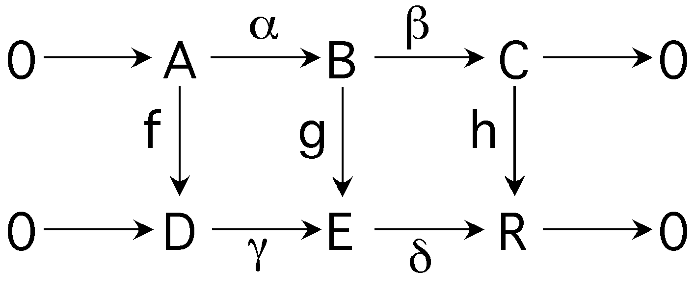

The Short Five Lemma, Part I

The Short Five Lemma
- In the commutative diagram with exact rows ...
- α and γ are injections
- β and δ are surjections
- ker β = Im α and ker δ = Im γ
- γ(f(a)) = g(α(a)) and
δ(g(b)) = h(β(b))
- Part I: If f and h are injections then g is
an injection
- Part II: If f and h are surjections then g is
a surjection
Finding Proofs
-
Axioms in 1st order logic form a rich theory
- With the complete axiomatization, Part I is a reasonable challenge for ATP
(and Part II is too much)
- Only four of the eight conditions are required for the proof.
- On a 450MHz SUN Ultra 80 with 1GB RAM, 300s time limit ...
| Axioms
| Vampire 5.0
| E 0.7
|
|
| Complete
| 42.3s
| Timeout
|
| Minimal
| 0.1s
| 0.6s
|
- Removing unnecessary axioms really helped!